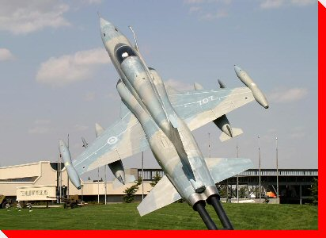

|
LARGE CANADIAN ROADSIDE ATTRACTIONS
PLANES
ON PEDESTALS
| |


CF-5
"Freedom Fighter"
Calgary, Alberta
Location: The Miltary Museums
Manufacturer and Model:
Canadair (Northrop) F-5 Freedom Fighter Serial No. 116707
Credit: Bill Tilson of Aerophoto
International

Planes on Pedestals
Main
| By Location | By Type | Wanted Photos of Planes
Large Canadian Roadside Attractions
Copyright
@ 2007 Ed Solonyka